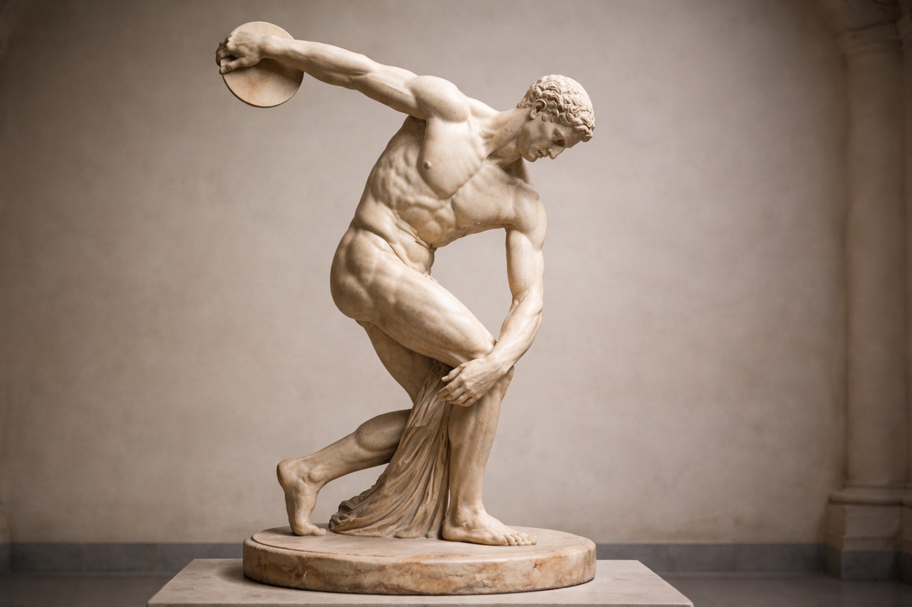
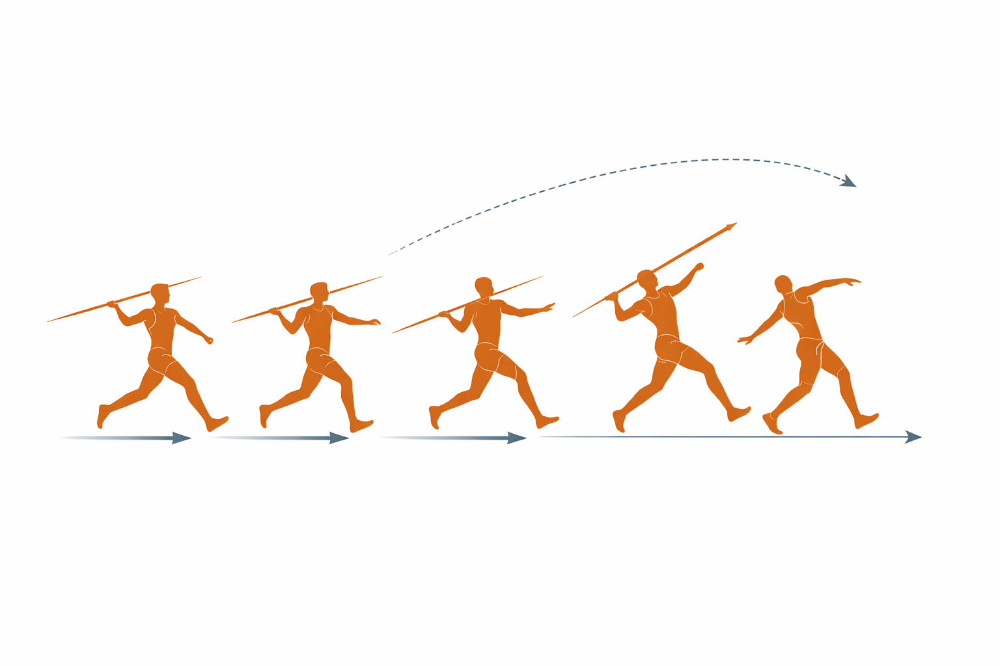

Εισαγωγή
Οι ρίψεις αποτελούν μία από τις παλαιότερες και πιο θεμελιώδεις κατηγορίες αγωνισμάτων του κλασικού αθλητισμού. Από την αρχαιότητα ως σήμερα, ο άνθρωπος συναγωνίζεται στην απόσταση που μπορεί να εκτοξεύσει ένα αντικείμενο χρησιμοποιώντας τη δύναμη, την τεχνική και τον συντονισμό του σώματός του.
Στους σύγχρονους Ολυμπιακούς Αγώνες, τα αγωνίσματα ρίψεων περιλαμβάνουν:
- Δίσκο
- Σφαίρα
- Σφύρα
- Ακόντιο
Σε αυτό το μάθημα θα εξερευνήσεις την ιστορία, τους κανονισμούς, την τεχνική και τις αθλητικές ικανότητες που απαιτεί κάθε αγώνισμα.
Ιστορική Αναδρομή
Αρχαιότητα
Οι ρίψεις έχουν βαθιές ρίζες στον αρχαίο ελληνικό πολιτισμό. Ο δίσκος ήταν ένα από τα πέντε αγωνίσματα του Πεντάθλου στους Αρχαίους Ολυμπιακούς Αγώνες (από το 708 π.Χ.) μαζί με το άλμα εις μήκος, το ακόντιο, τον δρόμο και την πάλη. Το ακόντιο χρησιμοποιούνταν αρχικά ως εργαλείο κυνηγιού και πολέμου πριν γίνει αγώνισμα.
Ο περίφημος «Δισκοβόλος» του γλύπτη Μύρωνα (περ. 450 π.Χ.) αποτελεί ένα από τα πιο εμβληματικά έργα τέχνης της αρχαίας Ελλάδας και απεικονίζει την τεχνική της ρίψης δίσκου.

Ιστορική Αναδρομή
Σύγχρονη Εποχή
Κατά την αναβίωση των Ολυμπιακών Αγώνων (Αθήνα, 1896) ο δίσκος και το ακόντιο επανήλθαν στους αγώνες. Η σφαίρα εισήχθη, επίσης, το 1896 για τους άνδρες, ενώ η σφύρα προστέθηκε το 1900. Για τις γυναίκες, τα αγωνίσματα ρίψεων εισήχθησαν σταδιακά: σφαίρα και δίσκος το 1948, ακόντιο το 1932, σφύρα το 2000.
Ρίψη Δίσκου (Discus Throw)
Περιγραφή Αγωνίσματος
Ο/Η αθλητής/τρια εκτοξεύει έναν κυκλικό δίσκο από έναν κύκλο ρίψης, προσπαθώντας να επιτύχει τη μεγαλύτερη δυνατή απόσταση. Ο δίσκος φτιάχνεται από μέταλλο και πλαστικό ή ξύλο.
Βασικοί Κανονισμοί
Σύμφωνα με τους κανονισμούς της World Athletics (2023a):
- Διάμετρος κύκλου ρίψης: 2,50 μ.
- Βάρος δίσκου: 2 kg (άνδρες), 1 kg (γυναίκες)
- Kάθε αθλητής/τρια δικαιούται 6 προσπάθειες στον τελικό (3 + 3 για τους 8 καλύτερους).
- Η ρίψη μετράται από το κοντινότερο σημείο πτώσης του δίσκου έως την εσωτερική περιφέρεια του κύκλου.
- Ο/Η αθλητής/τρια δεν πρέπει να εξέλθει από τον κύκλο πριν ο δίσκος αγγίξει το έδαφος.
- Ο δίσκος πρέπει να πέσει εντός του 34,92° τομέα.
Ρίψη Δίσκου (Discus Throw)
Βασική Τεχνική
Η τεχνική της ρίψης δίσκου αποτελείται από τα εξής στάδια:
- Αρχική θέση: Ο/Η αθλητής/τρια κρατά τον δίσκο με τα δάχτυλα να απλώνονται στην άνω επιφάνεια, στηρίζοντάς τον με τα άκρα των δαχτύλων. Στέκεται στο πίσω μέρος του κύκλου, με την πλάτη στη διεύθυνση ρίψης.
- Στροφή: Εκτελεί 1,5 στροφή γύρω από τον κάθετο άξονα του σώματος, μεταφέρει το βάρος από το πίσω πόδι στο μπροστά, δημιουργώντας φυγόκεντρη δύναμη.
- Τελική Ώση: Το σώμα «ξετυλίγεται» από κάτω προς τα πάνω (πόδια → κορμός → χέρι). Ο δίσκος αφήνεται από τον δείκτη σε γωνία περίπου 35° ως προς το οριζόντιο επίπεδο.
- Ισορροπία μετά τη ρίψη: Ο/Η αθλητής/τρια ανακτά την ισορροπία του/της εντός του κύκλου.
Απαιτούμενες Αθλητικές Ικανότητες
| Ικανότητα | Σημασία για τη Ρίψη Δίσκου |
|---|---|
| Δύναμη | Μυϊκή ισχύς για τη μεγιστοποίηση της ταχύτητας αφής. |
| Ευλυγισία | Πλήρης εύρος κίνησης στους ώμους και τη μέση. |
| Ισορροπία | Σταθερότητα εντός του κύκλου κατά τη στροφή. |
| Συντονισμός | Σωστή χρονική αλληλουχία κινήσεων. |
| Ταχύτητα | Γρήγορη ανάπτυξη ισχύος κατά τη στιγμή αφής. |
Ρίψη Σφαίρας
Περιγραφή Αγωνίσματος
O/H αθλητής/τρια σπρώχνει (δεν πετά) μία βαριά μεταλλική σφαίρα όσο το δυνατό μακρύτερα από έναν κύκλο ρίψης.
Βασικοί Κανονισμοί
Σύμφωνα με τη World Athletics:
- Διάμετρος κύκλου: 2,135 μ.
- Βάρος σφαίρας: 7,260 kg (άνδρες), 4 kg (γυναίκες).
- Το αγώνισμα διεξάγεται είτε από κύκλο (με στροφή) είτε με γλίστρημα.
- Η σφαίρα κατά τη ρίψη δεν πρέπει να κατεβεί κάτω από το ύψος του ώμου.
- Χρησιμοποιείται τάβλα στο μπροστά μέρος του κύκλου.
Ρίψη Σφαίρας
Βασική Τεχνική
Υπάρχουν δύο κύριες τεχνικές:
α) Τεχνική Γλιστρήματος (Glide / O'Brien Technique):
- Αρχική θέση στο πίσω μέρος του κύκλου, πλάτη προς τη διεύθυνση ρίψης.
- Οπισθόβαση (glide) με χαμηλό κέντρο βάρους.
- Τελική ώση με επέκταση ποδιών-κορμού-χεριού.
- Αφή σφαίρας από τα άκρα των δαχτύλων σε γωνία ~40°.
β) Τεχνική Στροφής (Rotational / Spin Technique):
- Παρόμοια με τη ρίψη δίσκου: ο/η αθλητής/τρια εκτελεί 1,5 στροφή.
- Απαιτεί υψηλότερο επίπεδο τεχνικής δεξιότητας.
- Οδηγεί συνήθως σε μεγαλύτερες αποστάσεις σε υψηλό επίπεδο.
Απαιτούμενες Αθλητικές Ικανότητες
| Ικανότητα | Σημασία για τη Ρίψη Σφαίρας |
|---|---|
| Μέγιστη Δύναμη | Κυρίαρχη ικανότητα — απαιτείται μεγάλη μυϊκή ισχύς. |
| Εκρηκτική Δύναμη | Ταχύτατη ανάπτυξη δύναμης κατά την ώση. |
| Ισορροπία | Στήριξη βαρέως αντικειμένου σε περιορισμένο χώρο. |
| Συντονισμός | Αλληλουχία κίνησης ποδιών-κορμού-χεριού. |
Ρίψη Σφύρας (Hammer Throw)
Περιγραφή Αγωνίσματος
Ο/Η αθλητής/τρια εκτοξεύει μία μεταλλική σφαίρα που είναι συνδεδεμένη με καλώδιο και λαβή (σύνολο: η «σφύρα»). Είναι το αγώνισμα που απαιτεί τη μεγαλύτερη φυγόκεντρη δύναμη από όλες τις ρίψεις.
Βασικοί Κανονισμοί
Σύμφωνα με τη World Athletics:
- Διάμετρος κύκλου: 2,135 μ.
- Συνολικό βάρος σφύρας: 7,260 kg (άνδρες), 4 kg (γυναίκες).
- Μήκος καλωδίου + σφαίρας: max 121,5 cm (άνδρες), max 119,5 cm (γυναίκες).
- Ο/Η αθλητής/τρια φοράει γάντια για την προστασία των χεριών (επιτρέπεται).
- Χρησιμοποιείται προστατευτικό κλουβί για λόγους ασφαλείας.
- Η σφύρα πρέπει να πέσει εντός του 34,92° τομέα.
Ρίψη Σφύρας (Hammer Throw)
Βασική Τεχνική
- Προκαταρκτικές στροφές: Ο/Η αθλητής/τρια εκτελεί 2-3 αρχικές στροφές της σφύρας, ενώ το σώμα του/της παραμένει σχεδόν ακίνητο.
- Στροφές: Εκτελεί 3 ή 4 πλήρεις στροφές του σώματος, διατηρώντας χαμηλό κέντρο βάρους.
- Τελική Ώση: Στην τελευταία στροφή, το σώμα «ξετυλίγεται» με μέγιστη ταχύτητα και η σφύρα αφήνεται σε γωνία ~44°.
- Το αριστερό πόδι (για δεξιόχειρες) λειτουργεί ως άξονας στήριξης.
Απαιτούμενες Αθλητικές Ικανότητες
| Ικανότητα | Σημασία για τη Ρίψη Σφύρας |
|---|---|
| Δύναμη | Απόλυτη μυϊκή ισχύς για τον έλεγχο του βαρέως εξοπλισμού. |
| Ισορροπία & Σταθερότητα | Κρίσιμες λόγω της φυγόκεντρης δύναμης. |
| Ευλυγισία | Μεγάλο εύρος κίνησης στη μέση και τους ώμους. |
| Τεχνική Δεξιότητα | Το πιο τεχνικά σύνθετο αγώνισμα ρίψεων. |
Ρίψη Ακοντίου
Περιγραφή Αγωνίσματος
Ο/Η αθλητής/τρια εκτοξεύει ένα μεταλλικό ακόντιο (δόρυ) από ένα διάδρομο προσέγγισης, χωρίς στροφή. Είναι το μοναδικό αγώνισμα ρίψεων που γίνεται με φόρα.
Βασικοί Κανονισμοί
Σύμφωνα με τη World Athletics:
- Μήκος ακοντίου: 2,60–2,70 μ. (άνδρες), 2,20–2,30 μ. (γυναίκες).
- Βάρος ακοντίου: 800 g (άνδρες), 600 g (γυναίκες).
- Η φόρα γίνεται εντός διαδρόμου 4 μ. πλάτους, μήκους 30 μ. min.
- Το ακόντιο πρέπει να πέσει στο έδαφος με την αιχμή πρώτα.
- Απαγορεύεται η στροφή 360° (σε αντίθεση με τον δίσκο).
- Ο/Η αθλητής/τρια πρέπει να σταματήσει πριν τη γραμμή τόξου.
Ρίψη Ακοντίου
Βασική Τεχνική
- Αρχική Φόρα: Σταθερή επιτάχυνση για 10-14 βήματα.
- Μεταβατικά Βήματα: Τα 4-5 τελευταία βήματα της φόρας το ακόντιο αποσύρεται προς τα πίσω και ψηλά, παράλληλα με τη διεύθυνση ρίψης.
- Βήμα Ώθησης: Το τελευταίο βήμα είναι μακρύ, το σώμα «κλίνει» προς τα πίσω.
- Αφή: Το ακόντιο αφήνεται σε γωνία ~35° ως προς το οριζόντιο επίπεδο, με κίνηση μαστίγιου του χεριού.

Απαιτούμενες Αθλητικές Ικανότητες
| Ικανότητα | Σημασία για τη Ρίψη Ακοντίου |
|---|---|
| Ταχύτητα | Γρήγορη φόρα και «μαστιγιακή» κίνηση χεριού. |
| Δύναμη | Ισχύς ώμου και αντιβραχίου. |
| Ευλυγισία | Κινητικότητα ώμου, αγκώνα, καρπού. |
| Συντονισμός | Σύνδεση φόρας με τεχνική ρίψης. |
| Ισορροπία | Σταμάτημα πριν τη γραμμή, χωρίς απώλεια ισορροπίας. |
Συγκριτικός Πίνακας Αγωνισμάτων
| Αγώνισμα | Χώρος Εκτέλεσης | Βάρος (άνδρες) | Βάρος (γυναίκες) | Κύρια Ικανότητα |
|---|---|---|---|---|
| Δίσκος | Κύκλος Ø 2,50 μ. | 2,00 kg | 1,00 kg | Δύναμη + Συντονισμός |
| Σφαίρα | Κύκλος Ø 2,135 μ. | 7,26 kg | 4,00 kg | Μέγιστη Δύναμη |
| Σφύρα | Κύκλος Ø 2,135 μ. | 7,26 kg | 4,00 kg | Τεχνική + Δύναμη |
| Ακόντιο | Διάδρομος 4 μ. | 0,80 kg | 0,60 kg | Ταχύτητα + Συντονισμός |
Ασφάλεια και Πρώτες Βοήθειες
Κίνδυνοι & Κανόνες Ασφαλείας
Κίνδυνοι κατά τις Ρίψεις
Τα αγωνίσματα ρίψεων ενέχουν υψηλό κίνδυνο τραυματισμού αν δεν τηρηθούν κανόνες ασφαλείας:
- Τραυματισμός ώμου: Ο πιο συχνός τραυματισμός στο ακόντιο (τένοντες, στροφικός πετάλου).
- Τραυματισμός οσφυϊκής μοίρας: Σε δίσκο και σφύρα, λόγω στροφικών δυνάμεων.
- Διαστρέμματα αστράγαλου/γόνατος: Κατά την εκτέλεση της στροφής.
- Κίνδυνος πρόσκρουσης: Αν βρίσκεται κάποιος εντός της ζώνης ρίψης.
Κανόνες Ασφαλείας
ΚΑΝΟΝΕΣ ΠΟΥ ΠΡΕΠΕΙ ΠΑΝΤΑ ΝΑ ΤΗΡΟΥΝΤΑΙ:
- Ποτέ μην μπαίνεις στον χώρο ρίψης, ενώ εκτελείται άσκηση.
- Πάντα να περιμένεις εντολή του/της εκπαιδευτικού πριν μαζέψεις τον εξοπλισμό.
- Να κρατάς πάντα τα όργανα ρίψης στραμμένα προς τα κάτω όταν κινείσαι.
- Στη ρίψη σφύρας η χρήση προστατευτικού κλουβιού είναι υποχρεωτική σε επίσημους αγώνες.
Ασφάλεια και Πρώτες Βοήθειες
Πρώτες Βοήθειες — Συχνοί Τραυματισμοί
Θλάση μυός:
- Σταμάτησε αμέσως την άσκηση.
- Εφάρμοσε πρωτόκολλο R.I.C.E. (Rest – Ice – Compression – Elevation).
- Αναζήτησε ιατρική βοήθεια αν ο πόνος επιμένει.
Διάστρεμμα:
- Ακινητοποίησε την άρθρωση.
- Εφάρμοσε κρύο (παγοκύστη τυλιγμένη σε πετσέτα) για 15-20 λεπτά.
- Μη φορτίζεις την άρθρωση.
Παγκόσμια Ρεκόρ
| Αγώνισμα | Άνδρες | Αθλητής | Γυναίκες | Αθλήτρια |
|---|---|---|---|---|
| Σφαίρα | 23,56 μ. | Ryan Crouser (ΗΠΑ) | 22,63 μ. | Natalya Lisovskaya (ΕΣΣΔ) |
| Δίσκος | 74,08 μ. | Jürgen Schult (Α. Γερμανία) | 76,80 μ. | Gabriele Reinsch (Α. Γερμανία) |
| Σφύρα | 86,74 μ. | Yuriy Sedykh (ΕΣΣΔ) | 82,98 μ. | Anita Włodarczyk (Πολωνία) |
| Ακόντιο | 98,48 μ. | Jan Železný (Τσεχία) | 72,28 μ. | Barbora Špotáková (Τσεχία) |